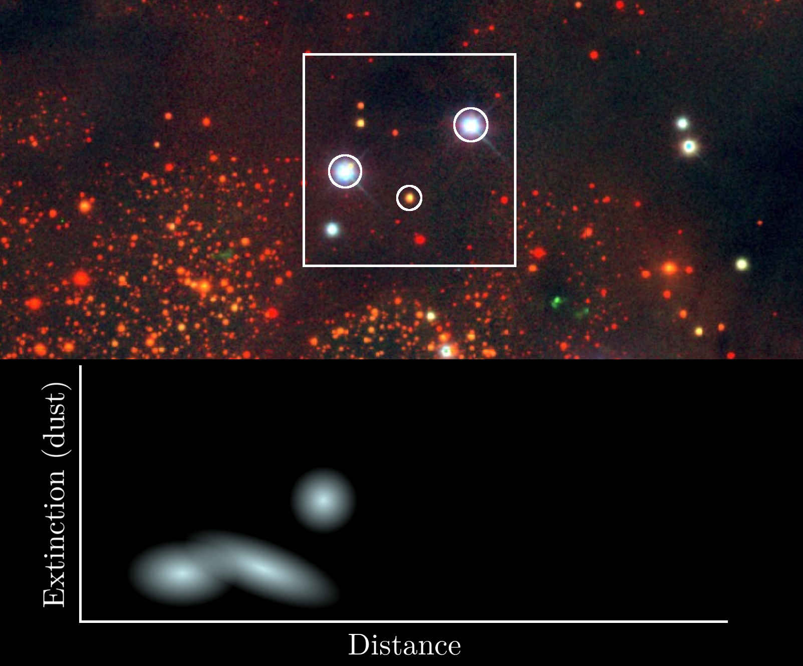
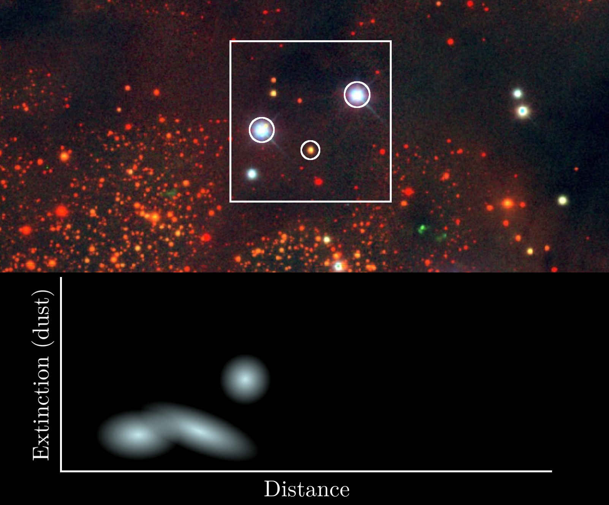

What is interstellar dust?
What we've learned from Gaia.
Gregory M. Green, Max Planck Institute for Astronomy, Heidelberg
Academia Sinica Institute of Astronomy & Astrophysics (中研院天文所)
10 September 2025

What is interstellar dust?
Interstellar space contains
Gas
(H, He, H2, CO, ...)
(Hα emission, D. Finkbeiner)
“Dust”
(small solid particles, <1 μm)

(interplanetary dust grain, D. Brownlee & E. Jessberger )
Dust clouds
“Extinction”: Dust scatters and absorbs light.
Dust interactions with light

Dust is crucial for understanding...


{kind=link}
Ways of mapping dust
Far-infrared emission
Modeling far-infrared emission

Model emission as modified blackbody: $$ I_{\nu} \left( \nu , T , \beta \right) = \overbrace{\sigma}^{\mathrm{column}\\ \mathrm{density}} \!\!\!\! \underbrace{ \kappa \left( \nu , \beta \right) }_{ \mathrm{low-}\nu\ \mathrm{cutoff} \\ \ \ \ \ (\kappa \ \propto \ \nu^{\beta}) } \! \overbrace{B_{\nu} \left( \nu , T \right)}^{\mathrm{blackbody}} \, . \ $$
Assume extinction proportional to $\sigma$.
Calibrate using sources with known extinction.
Shortcomings of emission-based maps
- 2D — How far away is the dust?
- Based on emission, but used to correct for extinction.
- Assumptions about dust temperature and emissivity.
- Contamination (cosmic infrared background, zodiacal light, galaxies, ...)
Want a better map: 3D and based on extinction, which is what we use dust maps to correct for.
Mapping dust in 3D with stars
Mapping dust along one sightline


 



3D dust maps of the Milky Way
Top-down view of dust in the Milky Way
The plot is centered on the Sun.
Combination of 3 different maps.
What about dust properties?
Maps of dust density don't say much about dust properties.
More evidence from interaction with light:
- Wavelength dependence of extinction
- Polarized extinction
- X-ray scattering
- Emission spectrum
- ⋯
The dust “extinction curve”


The extinction curve & grain-size distribution
Data
Pan-STARRS 1
(and other photometric surveys)

Gaia BP/RP spectrophotometry
(“XP spectra”)
Low resolution: R ~ 50 – 160.
Wavelength range: 330 – 1050 nm.
Flux-calibrated spectra of 220 million stars.

Example XP spectra


Measuring the dust extinction curve
How to extract information from XP spectra?


Forward model of stellar spectrum
$$ f_{\lambda}\left( \lambda \class{fragment}{\data{fragment-index=0}{ ,\class{star-color}{\Theta,\varpi,E,\xi} } } \right) \class{fragment}{\data{fragment-index=1}{ = {\color{gray} \underbrace{ \color{white} \ F_{\lambda}\left(\lambda,\class{star-color}{\Theta};\class{model-color}{W}\right) }_{ \mathrm{neural\ network} } } }} \class{fragment}{\data{fragment-index=2}{ \, \class{star-color}{\varpi^2} }} \class{fragment}{\data{fragment-index=3}{ \, e^{-\class{star-color}{E} \class{model-color}{R}\left(\lambda,\,\class{star-color}{R(V)}\right)} }} $$
Stellar parameters:
- $\Theta =$ type (from LAMOST)
- $\varpi =$ parallax (from Gaia)
- $E =$ extinction (from 3D dust maps)
- $R(V) =$ extinction curve shape (universal at first)
Model parameters:
- $W =$ neural net weights
- $R =$ extinction curve
Model structure reflects the physics of $f_{\lambda}$.
Train model with 2.4 million stars ...


Learned models of Gaia XP stellar spectra
Learned extinction curve


Inferring parameters of stars and dust
We apply our model to XP spectra, NIR photometry & Gaia parallaxes to infer parameters of 220 million stars.
LAMOST spectra not used for parameter inference.
Remove stars with bad $\chi^2/\mathrm{dof}$, low extinction, ...
~130 million high-quality R(V) measurements (Zhang & Green 2025).
Results: variations in R(V)

R(V) vs. extinction in individual clouds


U-shaped trend in many clouds.


R(V) in the Galactic plane
High R(V) correlated with star formation?
R(V) in the Magellanic Clouds

For the first time, we can “see” the dust extinction curve throughout much of the Milky Way in 3D.
New results:
- U-shaped relation between density & R(V).
- Star-formation / UV radiation correlated with high R(V).
A proposed mechanism of R(V) variations
(Several PAHs from PAHdb)
Polycyclic Aromatic Hydrocarbons (PAHs)
Abundant in the interstellar medium.
π→π* electronic transitions in the UV (responsible for 2175 Å extinction feature?).
PAHs and the extinction curve
PAHs grow → stronger 2175 Å bump
→ steeper optical extinction → lower R(V).
U-shaped trend:
PAHs grow in translucent (intermediate density) ISM → lower R(V).
In dense cores, coagulation forms large grains → flatter extinction curve → higher R(V).
High R(V) in star forming regions:
Star formation → UV radiation → PAH destruction → higher R(V).
What about accretion?
Accretion of gas-phase metals onto grains alters grain-size distribution.
→ Tends to lower R(V).
Not enough gas-phase metals to cause observed effect.